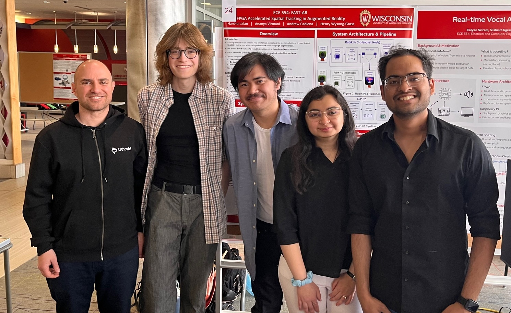
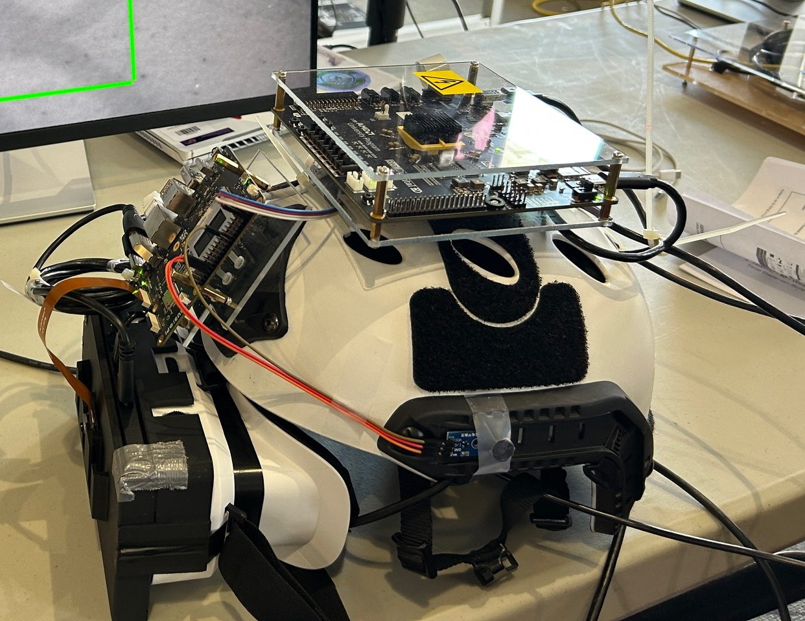
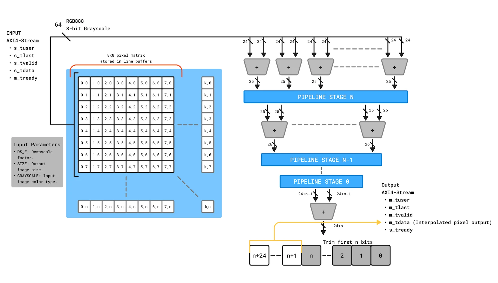

ECE 554: Digital Engineering Laboratory | UW-Madison Capstone Design Spring 2026 | FAST-AR
FAST-AR is a gesture inference accelerator based on the AUP-ZU3 FPGA/SoC. It uses custom IP to reduce problem size and manage peripheral and camera connections, freeing up valuable
SoC/PS compute power.
Click on one of the tiles below to learn more about the system architecture, gesture acceleration hardware, our demo or the team members.
Demo
For user vision and to provide updates on the gesture recognizer and rover status, a SBS stereo vision stream is used. A Rubik PI 3 captures a full HD (1080p) frame at 60FPS from the front of the headset, intakes data from the AUP-ZU3 via UDP over ethernet, and uses that data to display the rover and gesture recognizer status.

Team Members
Henry Wysong-Grass: RTL video pipeline design and integration
Ananya Virmani: Gesture inference model and software integration
Harshul Jalan: Software and embedded development and PS/PS interfacing
Andrew Cadiena: RTL IR Sensor design
George Tzimpragos (instructor) pictured on left.

System Architecture
This system is designed as a Heterogeneous System-on-Chip (SoC) co-design using both programmable logic (FPGA/PL) and a processing system (SoC/PS) for gesture acceleration, supported by an external SoC for video pipeline.

Gesture Acceleration Hardware
Our custom RTL downscaler processes 1080p RAW8 data in 76.8 µs.
By utilizing a parameterizable adder tree, we achieved zero DSP slice
utilization.
The downscaler also maintains timing closure up to at least 200MHz due to automatic pipelining.
Click to learn more.
